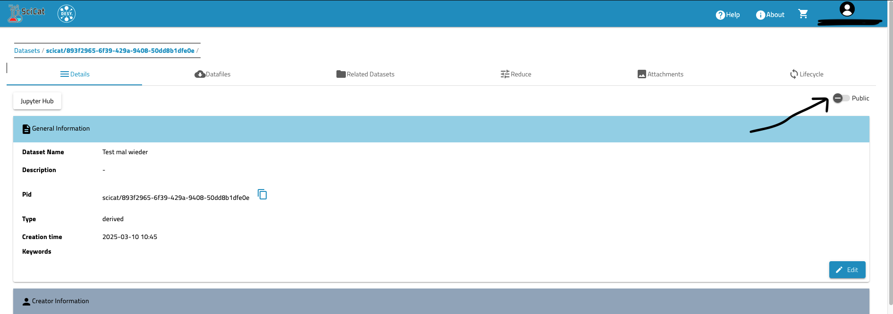
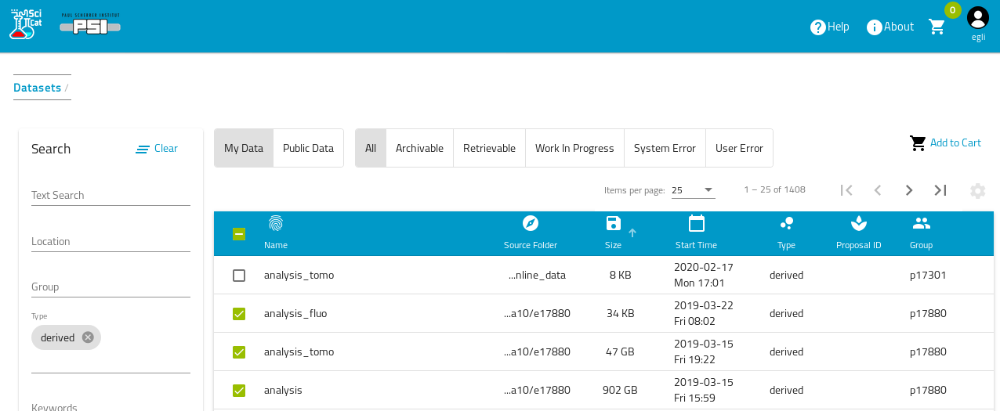
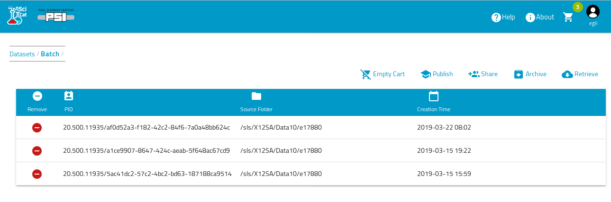
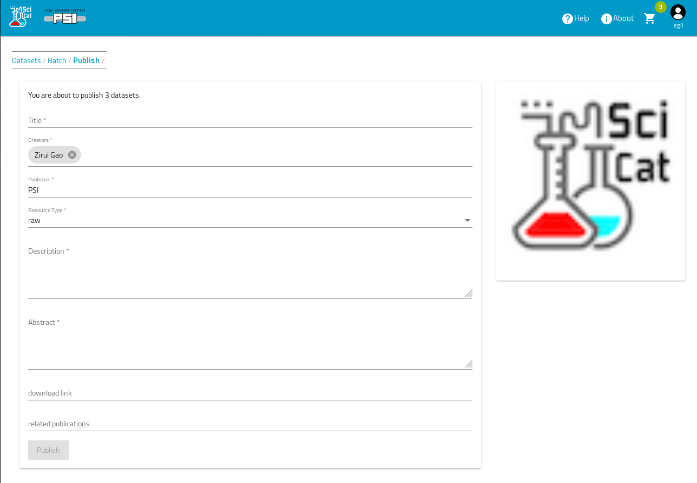
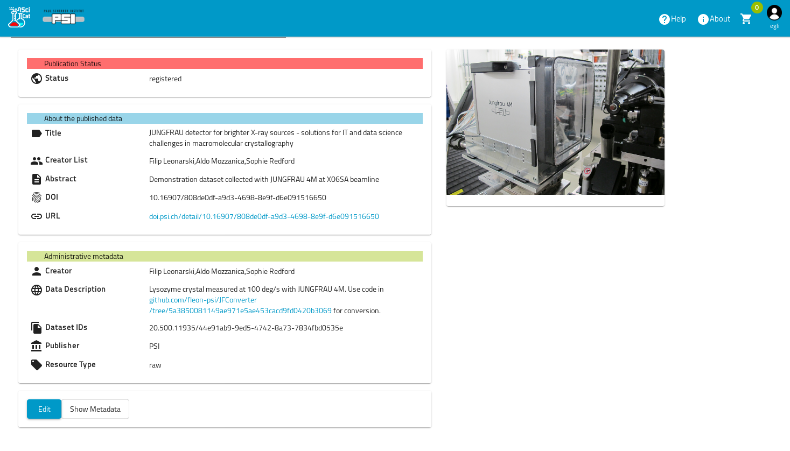
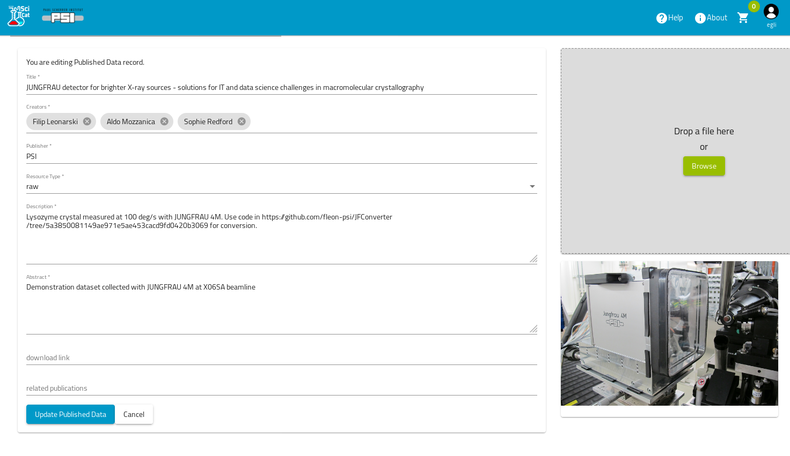
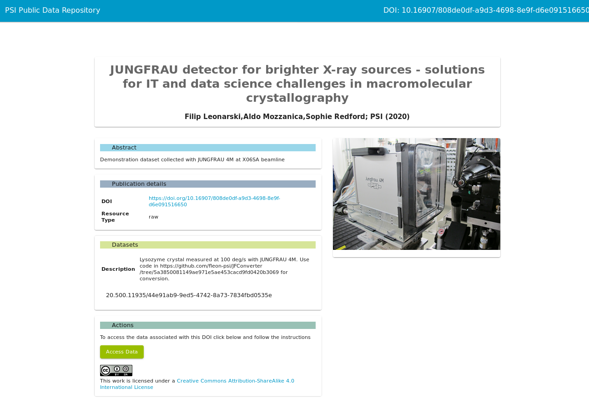
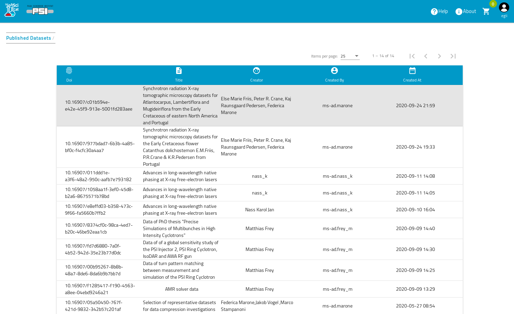

Publishing SciCat datasets
There are two ways of publishing datasets in SciCat via the GUI: one using the "publish button" for each dataset, and the other when registering a selection of datasets for a DOI according to DataCite standards. The first step is included in the second one. If you want a more advanced option for full exploitation of the available endpoints of SciCat, see here.
A more technical description of the workflow can be found here.
Publish without DOI registration
Using the "publish button" allows for making a dataset visible within the catalogue for a non-authenticated user. Each dataset has this button on the top right.

Publish with DOI registeration
The user can select one or several datasets for DOI (Digital Object Identifier) registration producing a record in DataCite, a DOI provider, pointing to a local detailed landing page. SciCat offers a DataCite conform schema during the workflow. Any data that is known to the data catalog can be published and the publication workflow goes as follows:
- The logged in user can define a set of datasets to be published.
- That user assigns metadata relevant to the publication of the datasets, such as title, author (currently the name(s) under 'Creator'), abstract etc. One can work on it at a later stage, too and re-edit the registration. Note, that no editing will be allowed once the registration request has been sent.
- A DOI is assigned to the published data which can e.g. be used to link from a journal article to the data.
- It makes the data publicly available by providing a detailed landing page that describes the data.
- It publishes the DOI to the worldwide DOI system from Datacite.
So the first step is to select the datasets that should be published:

Then by hitting the "Add to Cart" button these datasets are available in the Cart. This step can be repeated to add further datasets. Once the selection is finished you open the Cart ( click on the Cart symbol and choose actions ) to see the selected datasets:

Here you can still change your selection, remove datasets etc. Once this is finished simply hit the publish button. This leads you to the following screen:

Some of these fields will be pre-filled with information derived from the proposal data, such as the abstract. Independent of the pre-filling you can change the contents as you like until you are satisfied. Then hit the publish button, which leads you to the resulting display page:

Initially the status field is in state "pending". This means, the published data information has been stored, but not yet made public to the worldwide DOI system, and no landing page has been created yet. This gives the possibility, that (potentially another person) can have a look at the data and do further editing by hitting the Edit button:

Once this is finished one can hit the "register" button (not shown in previous screenshot, because already in state registered)to register the DOI and thus making the data public. The resulting public landing page for this data then looks somethink like this

Finally you can have a look at all the published data by going to the Published Data menu item: by clicking the user icon at the top right corner and choosing "Published Data":
